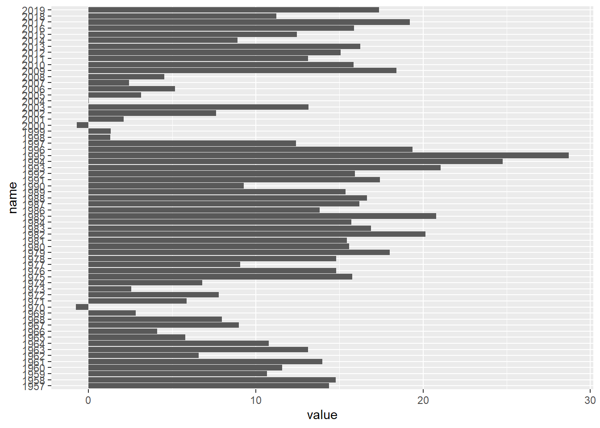

library(rvest)Web scraping using rvest
Applying web scraping to extract S&P 500 annual returns data
Acquiring data is an important step in Data Science. Without the required data you cannot finish your project, or more precisely, you cannot even start it. When we study Data Science at university or in an online course we almost always have the data we need ready for us, usually in a nice .csv file. Of course this is not always the case for real-life applications. Especially in the case you want to work on something no one has worked before, you need to find the data for yourself. If you are lucky, someone will have the data ready for you either to download from the web or through an API.
However, there is always the possibility that the data you need is in a website for example presented in a table. That’s a weird situation: you are so close to the data you want, but yet so far. Until now!
In this project we will introduce the idea of web scraping to acquire data from a webpage. Specifically, we will use the rvest libary in R to acquire data from a table online. We will apply this to get the annual returns of S&P 500 from slickcharts.com and use them on an application.
Let’s firstly import the rvest library.
Webpages are written in html. Rvest provides all the tools we need to read an html page in R. Indeed, it is as easy as reading a .csv file.
html <- read_html("https://www.slickcharts.com/sp500/returns")
class(html)[1] "xml_document" "xml_node" If you visit the website you will see that the data we need are in a table. So, in the html code of the website the data will be in a table object. You can check this with right click+“inspect page source” on the website. Rvest provides an easy way to import tables from the web and the best thing is it imports them as tibbles. Let’s see this below.
sandp500<-html %>%
html_element("table") %>%
html_table()
head(sandp500, n=5)# A tibble: 5 × 2
Year `Total Return`
<int> <dbl>
1 2024 11.8
2 2023 26.3
3 2022 -18.1
4 2021 28.7
5 2020 18.4The above tibble has the returns of the S&P 500 for every year since 1926. We should note however, that the S&P 500 was founded in 1957 so all the data before that are not actual S&P 500 returns but S&P 90 returns (the predecessor of S&P 500). Also, since 2024 is not finished yet the return shown is just the return to this day.
The above notes are useful for what we are going to do next.
Below we will make a simple function to use for our data. Specifically, we are taking inspiration from the following quote from Warren Buffett, one of the most successful investors, who once said about the S&P 500
“In my view, for most people, the best thing to do is to own the S&P 500 index fund.”
-Warren Buffett
But is this really true? The S&P 500 is considered one of the most important indices but we want to see how good it is in a span of specific years. For example, how are we going to see how the S&P 500 usually performs within five years? We will have to plot the rolling mean of the returns for five years. We will do this and plot our solution.
Let’s see how we do this. To begin with, for each year we will compute the rolling mean with the year in the beginning. So we want the year to be an integer. Also, in the edges we want our function to return NA, so we have to create a vector that has NA in the end, as many NAs as the years. For this reason we will use the function below.
pad_with_nas<-function(x, n){
#vector x
#adding n pads in the end
padded_x<-rep(NA,(length(x)+n))
padded_x[1:(length(x))]=x
return(padded_x)
}We try our function below to make sure it does what we want.
x<-c(1,2,3)
pad_with_nas(x,3)[1] 1 2 3 NA NA NAWe see that we got what we were expecting: our vector x with three NAs in the end.
Let’s move to the rolling mean function. This function will compute the rolling mean for five years after each year.
rolling_mean<-function(x, years){
#we want a numerical vector x
stopifnot(is.logical(x) | is.integer(x) | is.double(x) | is.complex(x))
stopifnot(length(x) > 0)
# and a positive integer years
stopifnot(length(years) == 1)
stopifnot(years %% 1 == 0)
stopifnot(years > 0)
#function
padded_x<-pad_with_nas(x, years)
output<-rep(NA,length(x))
for (index in seq_along(x)){
indices_in_window<-seq(index,index+years-1, by=1)
output[index]=mean(padded_x[indices_in_window])
}
return(output)
}We will use this function to see how the rolling mean in the S&P 500 is changing every five years. To do this we will use the data that refer to the actual S&P 500, so for years from 1957. Also, since 2024 is not finished yet, we will exclude it. We do these below.
sandp500_cleaned<-sandp500[2:68,]
head(sandp500_cleaned, n=5)# A tibble: 5 × 2
Year `Total Return`
<int> <dbl>
1 2023 26.3
2 2022 -18.1
3 2021 28.7
4 2020 18.4
5 2019 31.5We also want to reverse the order in the lines of our S&P 500 tibble so it starts from year 1957 and not 2023. We do this with the dplyr library.
library(dplyr)
Attaching package: 'dplyr'The following objects are masked from 'package:stats':
filter, lagThe following objects are masked from 'package:base':
intersect, setdiff, setequal, unionsandp500_cleaned_reversed<-sandp500_cleaned %>%
arrange(desc(row_number()))
head(sandp500_cleaned_reversed, n=5)# A tibble: 5 × 2
Year `Total Return`
<int> <dbl>
1 1957 -10.8
2 1958 43.4
3 1959 12.0
4 1960 0.47
5 1961 26.9 Now we import the ggplot2 library to plot the barplots.
library(ggplot2)We plot the barplots of the returns for five years.
means<-rolling_mean(sandp500_cleaned_reversed$`Total Return`,5)
means_no_na<-means[!is.na(means)]
years<-sandp500_cleaned_reversed$Year[!is.na(means)]
data<-data.frame(name=as.character(years), value=means_no_na)
ggplot(data, aes(x=name, y=value)) +
geom_bar(stat = "identity")+coord_flip()
This is a simple barplot but it serves our purpose. You can add more things to the barplot to make it prettier using the commands from our previous project (“The Economist”).
We indeed see that the S&P 500 averages mostly positive returns within 5 years. Apart from 1970 and 2000, if you buy the S&P 500 and you sell it in 5 years you will make a profit. Of course this is just an insight in the S&P 500 historical data and it should not be considered as investment advice.
This is the end of this project. We gave an explanation of web scraping and we applied it to stock market data. We created a nice function to get insights on the data we acquired ourselves online. I hope you enjoyed it!